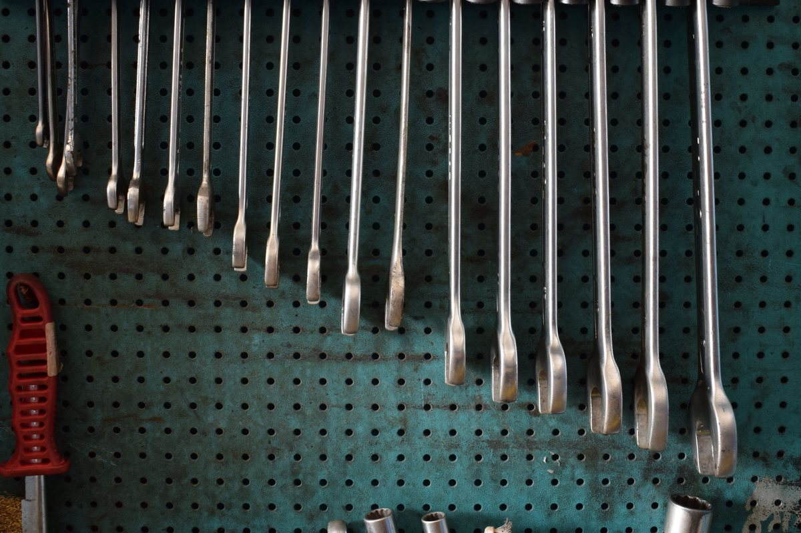

TOP 10 MUST-HAVES · GARAGE
Top 10 Must-Haves: Garage Organization
The ten things that get a cluttered garage off the floor, onto the walls and labeled, so the car fits again.
As an Amazon Associate I earn from qualifying purchases. Links and cart buttons marked #ad are affiliate links and may earn a commission at no extra cost to you. Read the full disclosure.

Ten picks, in order, each with the one reason it earns a spot. Every one comes from our Garage Organization Kit, so it's already been checked.
1Rubbermaid
Rubbermaid FastTrack Garage Wall System, 24-Piece Kit (6 rails, 18 hooks)
Why it's a must-have: Rails and movable hooks, including bike hooks, put a whole wall to work and rearrange in seconds.
2Amazon Basics
Amazon Basics 5-Shelf Heavy-Duty Steel Shelving, 36 x 14 x 72 in.
Why it's a must-have: Tool-free steel shelving that holds bins and bulky gear up off the slab.
3Amazon Basics
Amazon Basics 12 Qt Clear Latching Storage Bins, 6-Pack
Why it's a must-have: Clear, latching and stackable, so you can see what's inside without opening every box.
4FLEXIMOUNTS
FLEXIMOUNTS 4x8 Overhead Garage Ceiling Storage Rack with 6 Hooks
Why it's a must-have: Turns the dead space over the hood into storage for seasonal bins.
5KOFANI
KOFANI Heavy-Duty Steel Garage Hooks, 16-Pack
Why it's a must-have: Screw-in hooks that get ladders, cords, yard tools and bikes off the floor fast.
6Brother
Brother P-touch PT-M95 Label Maker Bundle (4 tapes)
Why it's a must-have: Labels every bin and shelf, so things go back where they belong.
7Franklin Sensors
Franklin Sensors ProSensor M150 Stud Finder
Why it's a must-have: Finds the studs and joists that rails, hooks and the ceiling rack have to screw into.
8Kapro
Kapro 770 Exodus 48 in. Level
Why it's a must-have: Keeps long wall rails dead level before the screws go in.
9Simple Green
Simple Green Industrial Cleaner and Degreaser
Why it's a must-have: Scrubs years of oil and grime off the slab before everything goes back in.
10Wells Lamont
Wells Lamont Cowhide Leather Work Gloves
Why it's a must-have: Protects your hands while you haul out junk and handle metal hardware.
Every pick was shipped or sold by Amazon and in stock when we checked it for our kit pages (Oct 3, 2026). Availability changes, so check each listing on Amazon before you buy.
More Top 10 Must-Haves: Halloween Golf Cart Parade · Football Tailgate · Garage Gym
As an Amazon Associate I earn from qualifying purchases. Links and cart buttons marked #ad are affiliate links and may earn a commission at no extra cost to you. Read the full disclosure.